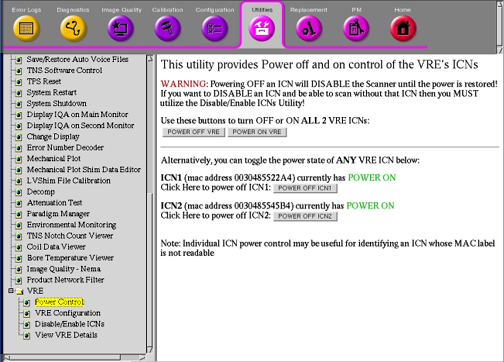
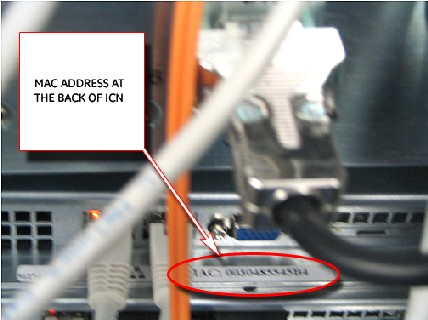
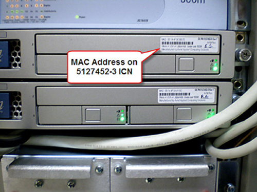
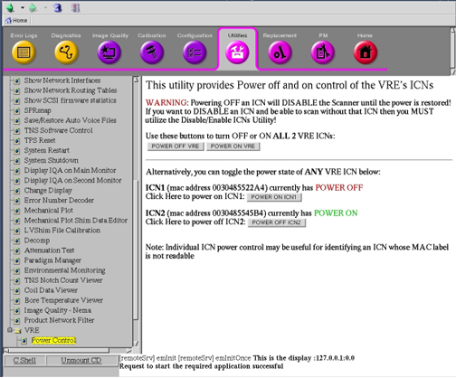
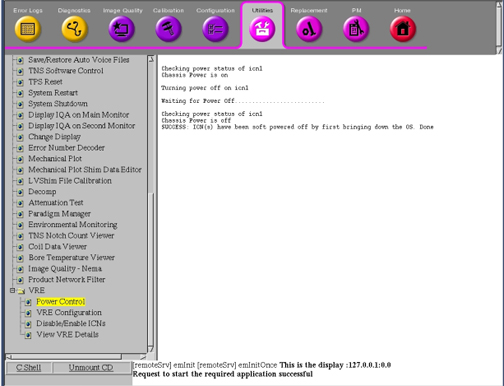
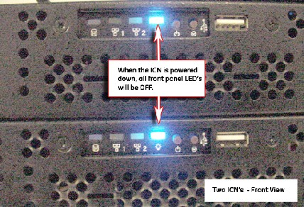
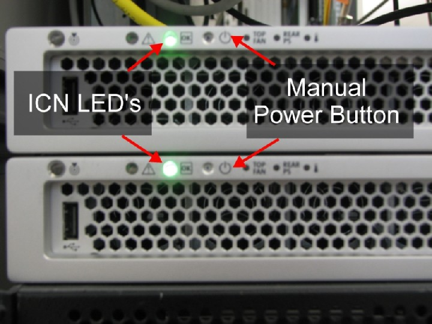

Operating Documentation
Direction 5670006, Rev# 1
Discovery MR750w GEM Service Methods
Module Version 5.0, Version Date 1/25/11
Operating Documentation |
| Required Persons | Preliminary Reqs | Procedure | Finalization |
|---|---|---|---|
| 1 | 10 mins | 30 mins | 5 mins |
The ICN modules will automatically power On when the Host Computer at the GOC is powered On. There is no need to switch each ICN on individually.
| ||||
| ELECTROCUTION HAZARD! | ||||
| DANGEROUS VOLTAGES ARE PRESENT THROUGHOUT THE SYSTEM CABINET WHEN POWER IS APPLIED. | ||||
| REFER TO OSHA LOCKOUT TAGOUT REQUIREMENTS for information on locking and tagging out the equipment. |
| ||||
Observe the following:
| ||||
If the application's software is down, power down the ICNs by using a command line at the root level.
Log into the application with Username: root and Password: operator.
In the xterm window, type: /etc/init.d/poweron_vres stop and press <Enter>. The ICN(s) should turn off after one minute.
| NOTE: | ICNs are powered down if the blue (for P/N 5127452) or green (for P/N 5127452-3) LEDs in front of the ICNs are no longer illuminated or flashing shown in Illustration 6 and Illustration 7. |
At the host computer, navigate to the Service Browser ⇒ [Utilities] ⇒ VRE ⇒ Power Control as shown below.
Illustration 1: Accessing Power Control

| NOTE: | The number of configurations should match the number of ICNs. |
Confirm the ICN numbers and their MAC addresses. The MAC addresses are printed on a sticker at the back of the ICNs as shown below.
Illustration 2: ICN MAC Address Location 5127452

| NOTE: | The MAC address for ICN 5127452-3 is located at the front of the ICN as shown below. |
Illustration 3: MAC Address Location for 5127452-3 ICN

Click the appropriate [Power Off ICN1] or [Power Off ICN2]shown below.
| NOTE: | The [Power Off VRE] can be used to power off both ICNs. |
Illustration 4: ICN 1 Switched Off

Wait for the ICN to power off. Upon refreshing the Power Control link, the illustration below shows the ICNs in their current state.
Illustration 5: Getting Switched Off

The ICNs are powered down if the blue LEDs in front of the ICNs are no longer illuminated or flashing. (See Step for 5127452 and Illustration 7 for 5127452-3.)
Illustration 6: Front Panel of ICN 5127452

Illustration 7: ICN Front Panel 5127452-3

In the event access to the browser or the command line cannot be acquired, the ICNs will need to be powered off manually. Try this preferred method before powering off the GOC since it does not corrupt the files on the hard drive.
Momentarily press the power button shown in Illustration 7. This brings down the ICNs in a soft method. It takes about a minute or two for the Operating System (OS) to boot down.
If the OS freezes or does not respond, the soft method did not work properly. Hold the power button down for six seconds to force the power off.
ICNs can be switched On using the VRE Power Control through the Service Browser ⇒ [Utilities] ⇒ Power Control shown below. (The [Power On VRE] can be used to power on both ICNs.)
Illustration 8: Switching On ICN

No finalization steps.